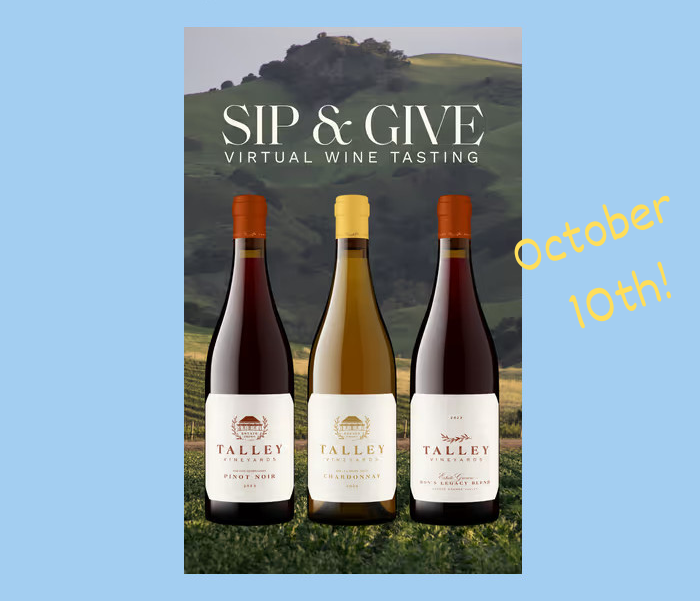

A Virtual Wine Tasting Benefit for Con Corazón
October 10, 2026 · 4 p.m. Pacific / 7 p.m. EasternJoin us for a virtual tasting of some of the finest wines from California's Central Coast! The event raises awareness and funds for Con Corazón, a U.S.-based charitable project that supports locally led community development in the rural town of Arcatao, El Salvador.
This is how it works: participants order a 3-bottle curated tasting pack from Talley Vineyards. Talley is one of the region's most acclaimed producers of Chardonnay and Pinot Noir, with wines that have earned recognition from Wine Spectator and Wine Enthusiast. The price of the wines is $130 ($165 value) plus tax. Complimentary shipping delivers the tasting pack directly to your home!
Participants from around the country connect on a Zoom call. The interactive tasting is facilitated by a Talley family member. It's a fun event with friends near and far, all while raising awareness of Con Corazón's efforts. Please invite friends to your home to share the experience!
Can't make it on October 10th? You can still order the tasting pack and enjoy the wines on your own time. Not a wine person? A donation to Con Corazón is always welcome and goes directly to Casa Hogar's staff and programs, which provide care and community for seniors in Arcatao who might otherwise face their final years alone. To donate, visit the Con Corazón Donation Page.
We're excited to feature these Talley Vineyards wines:
Please RSVP to Brian Bonet (brian.bonet@concorazon.org) and order your tasting pack.
You will be sent the Zoom virtual wine tasting link closer to the event date.
Questions? Contact Brian at brian.bonet@concorazon.org.